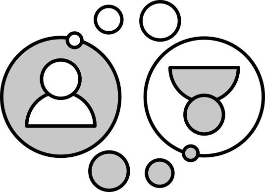

Hi, I'm Doug
I develop practices for effective cooperation, with a focus on post-consensus decision-making.
Cooperative decision-making
—when consensus can't be found
Consensus decision-making has become a go-to method for groups wanting to decide cooperatively. However it becomes increasingly difficult to achieve the conditions for success when groups get bigger, more diverse or dynamic—even groups which have the conditions for consensus can fail to reach it. In the presentation Post-consensus, cooperative decision-making, I explore why modified score voting is cooperative and how it can be used to make decisions when consensus isn't possible. Ukuvota is an open-source web-app which implements all the features outlined in the presentation, developed by Wolfi.
Kanthaus
—a home for purposeful project work(ers)

I co-founded Kanthaus to create a place for people to live and work together in a way that is social, ecological and economical. Together we are figuring out how to share a home and support each other reach our goals. Kanthaus doubles up lab for me to trial organizational innovations on willing subjects.
Common house constitution
—fundamental agreements for a common house

A common house is owned, used and maintained by the same group. Common houses are great—and come with their own set of challanges! I wrote a constitution for Kanthaus largely based on Elinor Ostrom's research into how commons succeed (or fail). A copy is now collectively developed by the Kanthaus members: Kanthaus Constitution.
hello world...
5th Feb 2019 — 91 words, ~1 min
Talk: Post-consensus, cooperative decision-making
10th Jul 2018 — 184 words, ~1 min
Talk: Introducing Kanthaus
4th Dec 2017 — 219 words, ~1 min
My motivation
I believe that life is an absurd gift; my gratitude for receiving it is my fundamental motivation for the work I do. I want to help make life as excellent as possible for all that (will) live, which firstly means reducing unnecessary suffering.
Thankfully, there are already a lot of people already doing something to make things better/less bad: some occupy trees in threatened forests, others distribute surplus food before it's wasted, yet others consider how to ensure AI becomes a benevolent force.
You might assume that people working for the common good must be cooperating: after all, many of the issues such groups face are caused by a lack of cooperation in the first place. However—as I've repeatedly experienced over several years—while most groups are theoretically cooperative, many fail to bring their theory into practice.
Failure to cooperate creates new issues for groups, sometimes so many that groups just split up! The frustration of repeatedly finding groups that wanted to cooperate but failed to do so lead me to study a variety of topics, with the philosophy of science by Karl Popper and the empirical analysis of the commons by Elinor Ostrom being particularly influential. I decided to focus on decision-making (no pun intended) since I've found it to be the practice which groups struggle with most.
My experiences
I was born and brought up in Scotland. My parents took my brothers and I to 'non-Western' countries when we were young. I read a book about a man who decided to live without money ('The Moneyless Man' by Marcus Boyle) when I was sixteen, which made me ditch my 'get-rich' plans. While studying Chemistry at Edinburgh I discovered student activism, coops and other such things. I worked for a multinational spirits company for a year, investigating the how process variables affect Scotch Whisky flavour.
Before my degree ended, I realised I didn't want to start a commercial job or do a PhD. Actually, I wasn't sure what I wanted to do, so I planned to work-exchange and hitchhike around Europe. Two weeks into that plan, I happened to join the beginning of the yunity project. The idea was to recreate the successful foodsharing.de web-app as an open-source, multilingual and extendable platform to enable the foodsharing movement to grow. My time with yunity was quite extraordinary: we hitchhiked from one work-sprint to another, we were gifted accommodation and rescued most of our food from waste. I blogged about the first year. Due to a variety of factors, the scope of yunity grew ever larger and the productivity towards the initial goal ever lower: with some bemusement I observed a team become a network.
A number of people I'd met along the way wanted to continue doing project work with a bit more stability. We got together to make what would become known as Kanthaus.
My idea of fun
When I'm not doing cooperative process stuff I club seals hitch-hike, read sci-fi/surreal short-stories, do judo, climb trees, camp, watch insects, do yoga, explore abandoned building, forage, brew...
Me supporting you
Resources: All the work I make is free (CC0), so please save, copy, share, edit, etc, without further permission.
Events: Workshops, talks, presentations, etc: I'm really into bringing relevant content to people that want it
Consultancy: as in, "let's chat and see if I have something useful to tell you."
You supporting me
Feedback: is informative and motivating, both positive and negative aspects and questions.
Money: ~€100/month would cover my basic costs, so even seemingly small donations are highly beneficial.
- Ko-fi (one-off payments, 0% service charge)
- Patreon (recurring payments, 10% service charge)
- Paypal (one-off payments, 0-5.3% service charge)
- Liberapay (recurring payments, 0% service charge)
- Faircoin: fHTqaYTrLowngY1ReVSkfr1afsSs2QwHdV
- Bitcoin: 17hdGRYETcmBugna4Sxh9DPQarTbDcCcV
Also useful:
- Places to stay while travelling.
- Laptops and mobiles < 5 years old (even if broken.)
- News about cool governance stuff.
- Promotion and engagement (online, offline, straight-line)
N.B. me supporting you does not require you to support me.